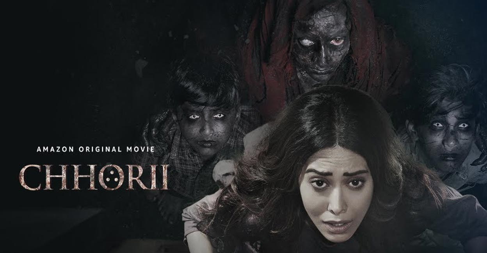
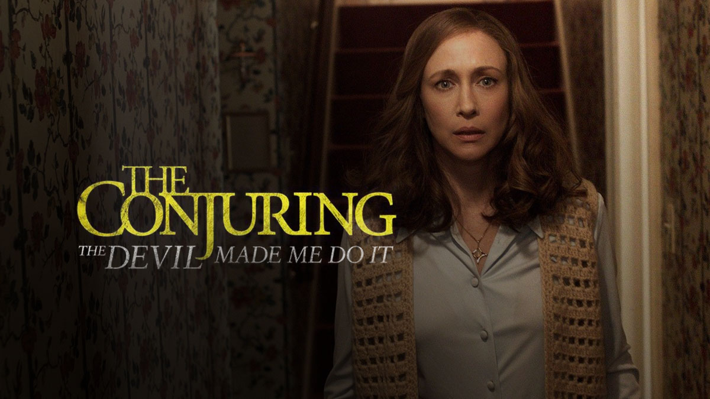
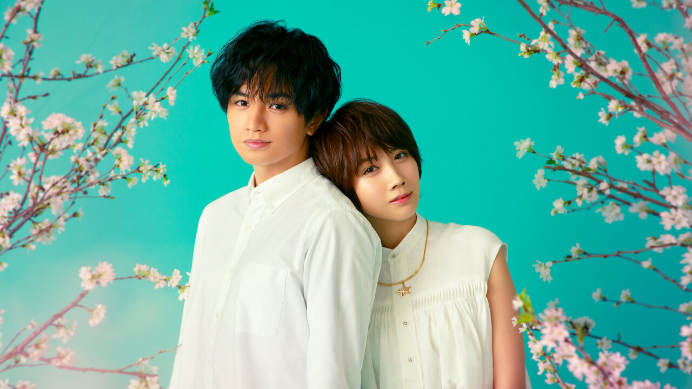

| Movies | Description |
|---|---|
 |
MY LITTLE PONY A New Generation is set many years after the events of My Little Pony: Friendship Is Magic, in a magic-less era where the story of Twilight Sparkle and her friends has become a mere legend, and the three pony kinds earth ponies, pegasi, and unicorns have grown apart, living separated from one another in paranoia and prejudice. Duration: 1h10m Released: September 22 2021 Cast: Vanessa Hudgens, Kimiko Glenn, Sofia Carson PG |
 |
THE MERMAID Shan, a beautiful mermaid, attempts to kill Xuan, a businessman, by seducing him first but ends up falling in love with him. Duration: 1h23m Released: February 8 2016 Cast: Lin Yun, Kris Wu, Chi Ling Chiu PG |
|
DOLITTLE A physician, who can speak with animals, is summoned by the queen to find a cure for her life-threatening disease. Soon, he embarks on a journey with his furry friends in search of a healing tree. Duration: 1h15m Released: January 17 2020 Cast: Tom Holland, Selena Gomez, Carmel Laniado PG |
|
|  |
CHHORII Hemant and Sakshi, a married couple, are forced to move out of their home seek refuge in a remote house. However, she soon experiences supernatural which threaten her life. Duration: 2h9m Released: November 26 2021 Cast: Pallavi Ajay, Jajesh Jais, Yaaneea PG-13 |
|  |
THE CONJURING Arne Cheyenne Johnson stabs and murders his landlord, claiming to be under demonic possession. Ed and Lorraine Warren investigate the case and try to prove his innocence. Duration: 1h52m Released: June 4 2021 Cast: Sarah Catherine, Julian Hilliard, Patrick Wilson VL 16 |
 |
MONSTROUS A terrifying new horror awaits Laura and her 7-year-old son, Cody, when then they flee her abusive ex-husband and try to settle into a new life in an idyllic and remote lakeside farmhouse. Still traumatized, their physical and mental wellbeing are pushed to the limit as their fragile existence is threatened. Duration: 1h29m Released: March 12 2022 Cast: Christina Ricci, Santino Barnard, Colleen Camp PG |
 |
FIRESTARTER A couple met while volunteering as guinea pigs for an experiment. The experiment is shrouded with suspicion. Later they marry, have a child who has strange abilities. Is this due to the experiment? Duration: 1h54m Released: January 25 1984 Cast: Stephen King, David Keith, Heather Locklear PG |
 |
HE'S ALL THAT A New Generation is set many years after the events of My Little Pony: Friendship Is Magic, in a magic-less era where the story of Twilight Sparkle and her friends has become a mere legend, and the three pony kinds earth ponies, pegasi, and unicorns have grown apart, living separated from one another in paranoia and prejudice. Duration: 1h10m Released: September 22 2021 Cast: Vanessa Hudgens, Kimiko Glenn, Sofia Carson PG |
|  |
LOVE LIKE THE FALLING PETALS Two female crooks who come from very different backgrounds meet on their way to the French Riviera and decide to work together and swindle Thomas Westerburg, a billionaire. Duration: 1h30m Released: May 8 2019 Cast: Anne Hathaway, Dean Norris, Rebel Wilson PG-13 |
 |
THROUGH MY WINDOW Shan, a beautiful mermaid, attempts to kill Xuan, a businessman, by seducing him first but ends up falling in love with him. Duration: 1h23m Released: February 8 2016 Cast: Lin Yun, Kris Wu, Chi Ling Chiu PG |
 |
WEST SIDE STORY A physician, who can speak with animals, is summoned by the queen to find a cure for her life-threatening disease. Soon, he embarks on a journey with his furry friends in search of a healing tree. Duration: 1h15m Released: January 17 2020 Cast: Tom Holland, Selena Gomez, Carmel Laniado PG |